Glossary.
Welcome to the Ceptre Editor Glossary!
In this page you can search for a summarized version of what each section of the Ceptre has and what it does.
You are welcome to click on the terms to open an image of the section that it's describing.
Let's begin!
Lock/Unlock button :
To be able to edit code the section should be unlocked, however for it to be applicable in your project it needs
to
be locked. This of it as an "Edit mode."
.png)
Menu :
This allows you to hide of show the selected Menu, it can make it easier to keep track of what you're working on.
Delete buttons :
This buttons allows you to delete any selected sections or anything the button is beside.

Add buttons :
This buttons allows you to add to selected sections or anything the button is beside.

Editor & Initial State :
The Editor and the Initial State must both be filled before being able to execute your project.

Editor :
The editor is where you build what exists or could happen in your project.

Choose File :
This button allows you to load the files you were previously working on.

Save Program :
This button allows you to save the project you are currently working on.
The page will remind you to save your projec before you leave, since it does not automatically sae your progress.

Add Set+ :
Add Set+ allows you to create a new group of elements that will exist in your world.

Set name :
This menu allows you to locate and navigate the different Sets you’ve created.

Add to currently selected Set :
This field allows you to add a new element to the Set you have currently selected.

Remove element/Set :
Remove Set/Element allows you to delete a selected Set or Element.

Add Predicates :
This allows you to create new predicates, which represent additional information about sets or information which
is true or active in the world.

Name Predicate :
This field allows you to name your predicate.

Predicate Arguments :
This allows you to select the way the sets will interact between each other.

Rules :
Rule are the actions or changes that can happen in your world

Add Rules :
This allows you to add a new Rule

Rule Name :
This field allows you to name your Rule.

Conditions :
Conditions are the predicates that need to be true before a rule can take effect.
You can also add variables so you don’t have to make multiple rules with the same condition and effect.
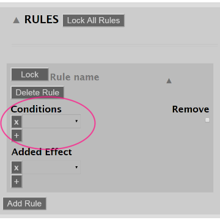
Remove box :
Since Rules represent a mutation of some kind, one of the conditions will most likely need to disappear: To do so
you only need to tick the Remove box.
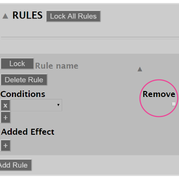
Added Effect :
The Added Effect is the result of a rule firing.
You can’t add new variables in this section but you can use variables that were creates in the section of
Conditions.
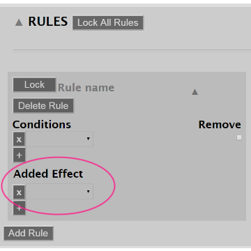
Delete Rule :
This allows you to delete a Rule you don’t need anymore.
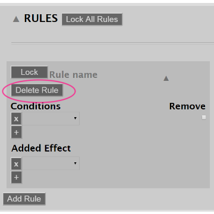
Initial State :
The Initial State is the base in which your program will start or build from.
The first section is almost the same as the Editor, however if you want to load a previous document it needs to be
compatible with your Editor, otherwise it won’t be able to load.
.png)
Lock All Atoms :
As the name suggests, this button locks and unlocks all atoms at the same time.
This allows you to save time so you don’t have to each atom. Locking atoms means that they are applicable in your
program and are uneditable.
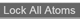
Add Atom :
This allows you to add an Atom, which are predicates that are already in place in the world when you start an
execution.
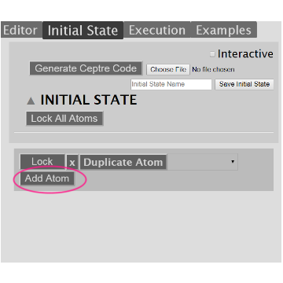
First Field :
This allows you to select a predicate for your atom.
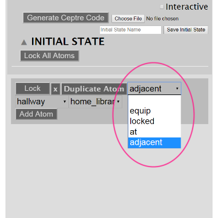
Second Field :
After you select a Set in the First field new menus appear to select the elements from said Set.
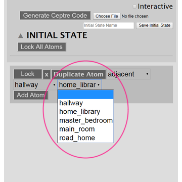
Duplicate Atom :
This allows you to clone an Atom that already exists.

Execution :
The Execution allows you to fire the rules on your game and essentially play it through.
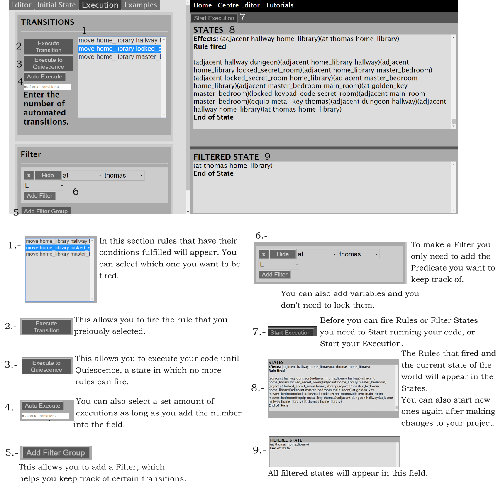
Transition Box :
In this section rules that have their conditions fulfilled will appear. You can select which one you want to be
fired.
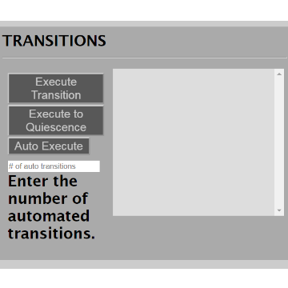
Execute Transition :
This allows you to fire a selected rule.
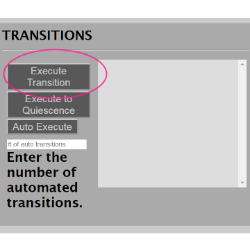
Execute To Quiescence :
This allows you to execute your code until Quiescence, a state in which no more rules can fire.
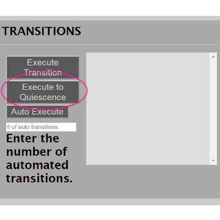
Auto Execute :
You can also select a set amount of executions as long as you add the number into the field.
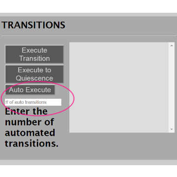
Filter :
To make a filter you only need to add the Predicate you want to keep track of. You can also add Variables.
You aso don't have to lock Filters.
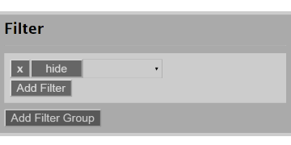
Add Filter Group :
This allows you to add a Filter, which helps you keep track of certain transition (Predicate).
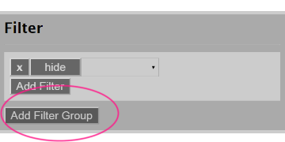
Add Filter :
You can add more than one predicate to your Filter Group.
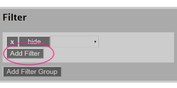
Start Execution :
Before you can fire any rules or filter states you need to start running your code, or start your execution.
The rules that are fired and the current state of the world will appear in the states.
You can also start new ones again after making changes to your project
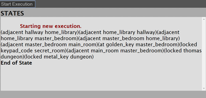
Filter States :
All filtered states will appear in this field.
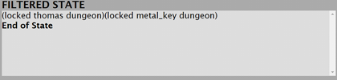
Examples :
You can download already done projects so you can load them into the Ceptre and explore different ways you can
code your project.
This projects are editable and you can still download the original from the website.
Feel free to change and experiment with the examples.
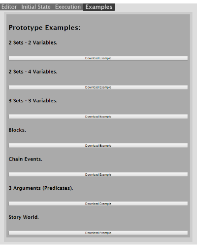
.png)